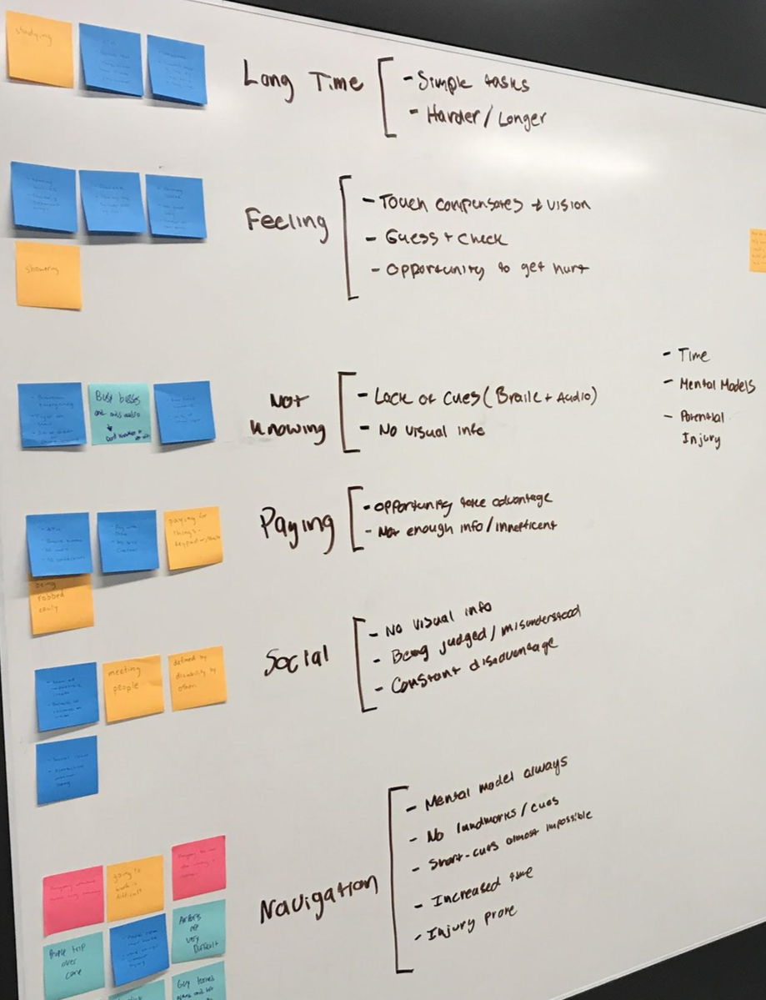
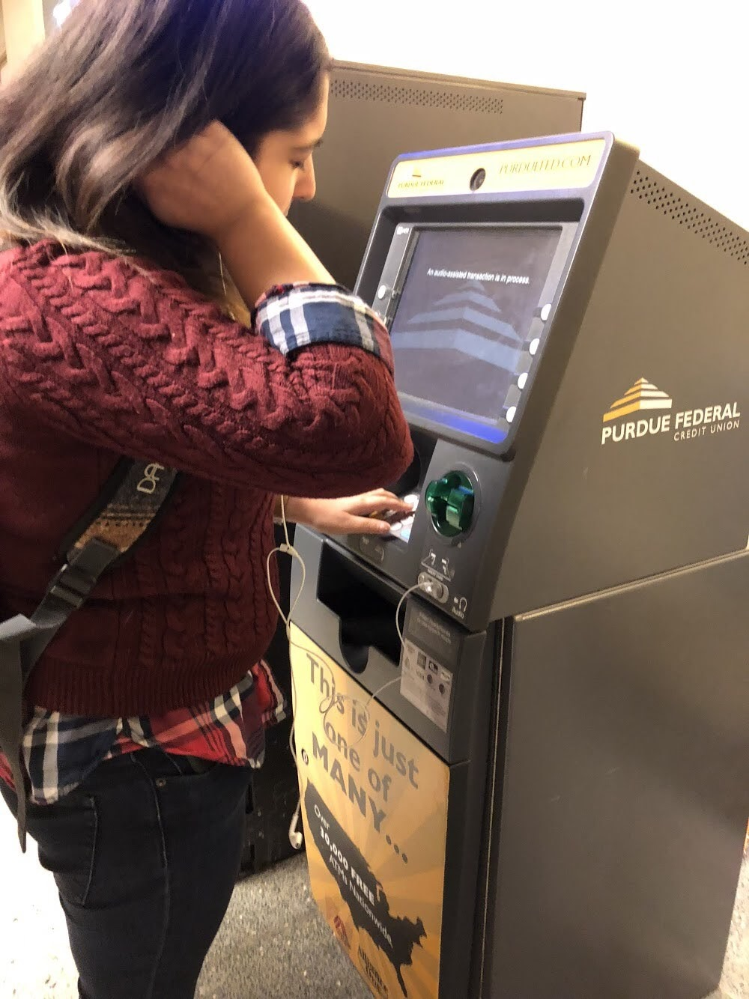
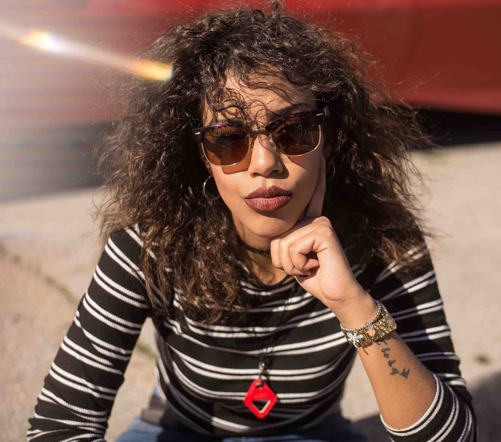
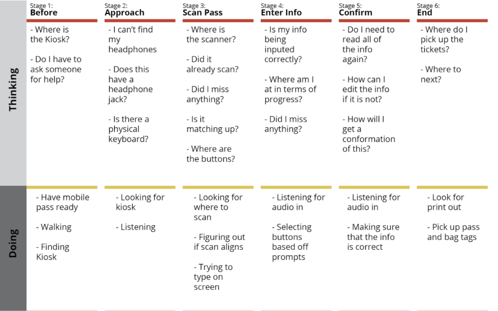
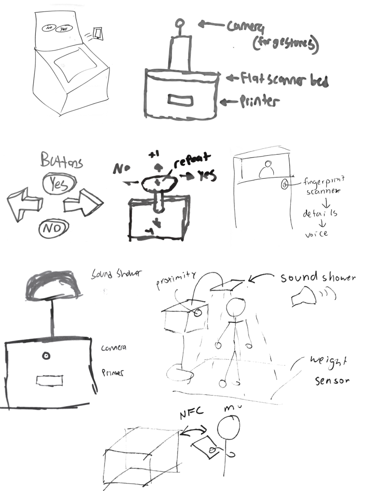
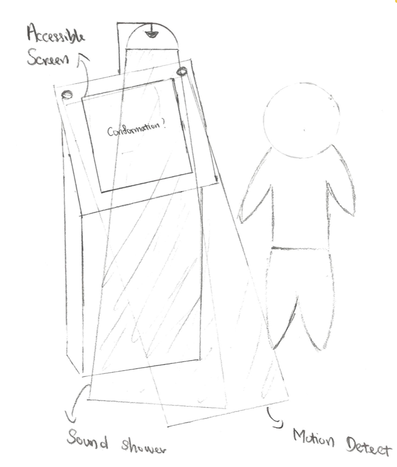
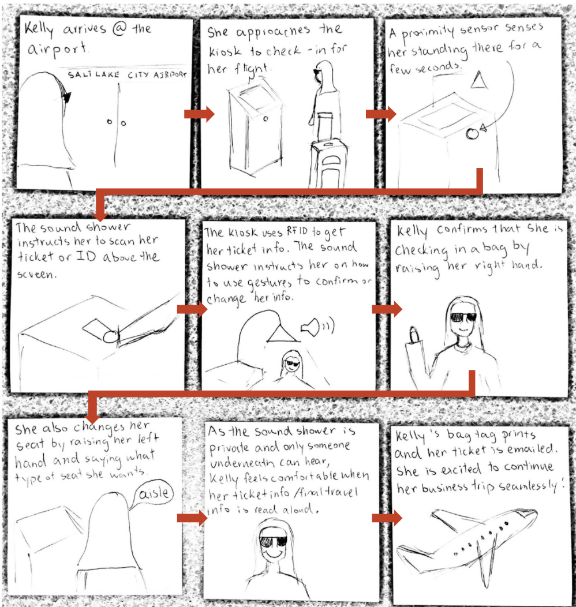
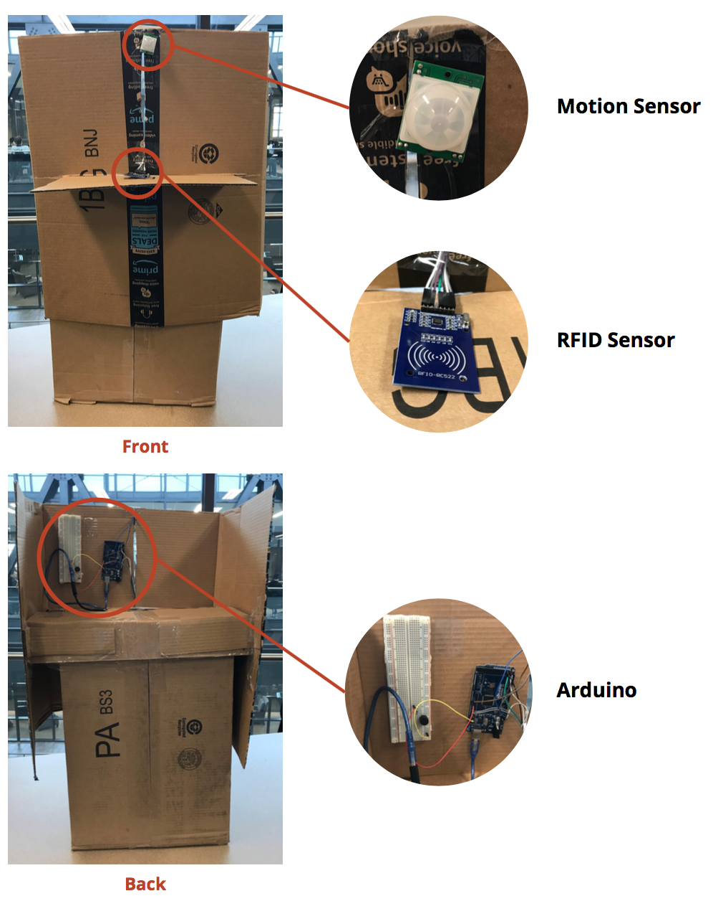

Accessible Airport Kiosks
Team
4 students
Project
5 weeks UX studio project on a social or ethical issue
My Role
User & stakeholder interviews Secondary research Empathy building exercise Research analysis Persona creation Prototyping with Arduino and physical materials Wizard of Oz usability testing
Intro
“Exclusion is designed,” a quote from Kat Holmes, a designer focused on inclusive design, describes our team’s mindset as we set out to create a solution for people who have visual impairments. Often, products around us are designed without considering the needs of many user groups.
Our project centered around improving airport kiosks to make them more accessible for people with visual impairments but also work for sighted populations. Through a process of user research, iterative design, and prototyping with Arduino, we learned a great deal about users whose experience we previously knew nothing about.
Problem
For people who have complete blindness, the current airport kiosk system is ineffective because the kiosk only provides visual feedback, Braille, and poor audio cues. This doesn’t allow blind users to have an experience as equal and easy as that of their sighted peers.
Research
Student Interview
Early in the project, we were deciding whether our scope would include people who are blind and/or visually impaired. We interviewed a student with angular nystagmus to gain more insight about what difficulties having a visual impairment might cause. He gave us a variety of examples about daily interactions that can be challenging that we overlooked, and also pointed us toward the on campus Disability Resource Center, specifically the Alt Format division that aids students with visual impairments.
Disability Resource Center Interview
We interviewed Heidi Smart, who works in Alt Format. The interview was helpful in gaining a background about students with visual impairments and resources available to them on campus.
Smart recounted a story in which a student was unable to use the laundry machines because the machines had been switched to a digital kiosk system. Her RA volunteered to help the student with laundry, and although it was a temporary fix, it left the student feeling dependent and was not an ideal solution. Daily tasks can become challenging when the systems around someone do not support their needs.
Through our interview with the DRC, we learned 3 key takeaways about our users:
- Braille use is declining - An increasing percent of incoming blind students each year do not know how to read Braille.
- Audio learning is increasing - Educational accommodations are moving towards audio instead of Braille, such as through screen readers.
- Digital kiosks are frustrating - Because the offer little more than visual affordances, digital kiosks are a common frustration for people who are visually impaired or blind.
Secondary Research
To gain a broader understanding of problems our users face, we looked at personal accounts we found through stories on forums, Quora answers, and YouTube videos. The story of the student and the laundry machines from our interview is similar to countless ones we found.
 We created an affinity diagram to find common themes amongst these stories, and sorted them into these categories reflecting different frustrations.
In all of the stories, there was a common theme of independence. People who have visual impairments want to be able to go through their daily activities on their own, and often both the technology and people around them make it much more difficult and emotionally taxing. For example, navigating an unfamiliar street can be difficult because of obstacles in the way, uneven surfaces, and people trying to “help” by grabbing and redirecting someone who is blind. This can feel very embarrassing and frustrating.
The interview encouraged us to look more in-depth into kiosks and the accessibility standards they are required to have. One of the most salient examples we found, the Technology Bill of Rights (2010) mandates:
“All consumer electronics, home appliances, kiosks, and electronic office technology be designed so that blind people are able to access the same functions as sighted people by non-visual means and with substantially equivalent ease of use.”
Though this mandate exists, most kiosks have a lack of standardization and are extremely difficult to use. Functionality is still overwhelming constrained to visual interactions.
Empathy Building Exercise
 Though we cannot fully understand what it is like to be blind, we wanted to build empathy. To achieve this, we attempted using an ATM with our eyes closed to withdraw cash. We paid attention to the audio prompts in particular because that’s primarily how kiosks are currently made to be “accessible.”
The process was confusing, unclear, and disorienting. All of our attempts were unsuccessful. A quote from my reflection on the experience demonstrates how frustrating it was:
The voice continued, so I took that as confirmation that it worked. It prompted me with options such as “Fast Cash - press 1,” and “Transfer - press 2.” Thinking that fast cash was a withdrawal, I selected that option. The voice then told me it was withdrawing $60. I became very confused, as I had never specified an amount for cash and couldn’t remember if I had, and it was difficult trying to think about that while paying attention to the voice against the loud background noise.
We learned that:
- Loud environments make listening to audio prompts challenging
- Accessibility for kiosks often means a difficult to find headphone jack
- Instructions, especially if missed, are unclear
- There is a lack of standardization with kiosks
Trying a digital kiosk helped us better understand the impact badly designed system have. From here, we began to summarize our findings and ideate.
We decided to focus on airport kiosks because there is a significant lack of standardization and they rely very heavily on visual information. Airport kiosks can be significantly improved to be more accessible.
Analysis
Persona
 Our persona Kelly Reed was based on the common themes and goals we found through our research. We wanted the motivation of being independent to be central to her personality. Creating the persona was useful in synthesizing our different methods of research and thinking through a storyboard later on.
Quote
“I hate asking for help, I’d rather just figure it out.”
Bio
Kelly is a business consultant from Salt Lake City who travels often for work. At airports, she has to have people direct her to the counter and receive assistance to check in and drop off her luggage. In the early morning or late night, attendants at her local airport are not always available. She avoids using the digital kiosks that are now widespread in major airports because the audio directions are unclear, it is hard to hear in the loud airport, and she only carries Bluetooth headphones that don’t connect with the audio jack.
Motivations
- She wants to be independent, and to be able to accomplish daily tasks by herself
- When she travels for work, she wants her business trips to go as smoothly as possible
- She is proud of ability to be self-sufficient
Frustrations
- She wants to be independent, and to be able to accomplish daily tasks by herself
- When she travels for work, she wants her business trips to go as smoothly as possible
- She is proud of ability to be self-sufficient
Scenario
Travels alone for business conferences around 2-3 times a year
Task Flow
Due to time and location constraints, we were unable to visit an actual airport to test in. We used Youtube videos to reconstruct the experience of interacting with an airport kiosk and combined it with our empathy building exercise to construct a journey map of what someone might be thinking, doing, or feeling while interacting with a kiosk.
Sketching & Prototyping
We decided on scoping down to airport kiosks in part inspired by our interview with the DRC and empathy building exercise. Airport kiosks are currently very inaccessible for our user group, usually offering only a headphone jack with unclear audio instructions.
 Sensors & Feedback A potential problem is that users are not carrying headphones, or use Bluetooth headphones, which would eliminate being able to use kiosks as of now. Our first sketch focused on combining a proximity sensor to recognize a nearby user and begin audio prompts, a large scanner that is easy to find, tactile buttons that give haptic feedback, and audio feedback.
Buttons & Input One of our frustrations during the empathy exercise was that buttons were hard to distinguish. To reduce confusion, we ideated different button styles that would simplify the number of buttons. Other inputs we considered included a fingerprint scanner (eliminated for privacy issues), a joystick, gestures, voice, weight, and other types of scanners.
Sound Shower Other sketches incorporated a sound shower, which isolates audio feedback to the user for privacy. This would be connected to a sensor such as proximity or weight to sense when a user is nearby.
NFC We also considered different ways of wirelessly transferring a boarding pass, so that a physical ticket or an email would not be required. One method is through using NFC or RFID to send a boarding pass to the user’s phone.
As we moved to through ideating, we began to think about how we could use an Arduino as a tool to prototype the experience.
We chose a combination of using a proximity sensor, gestures, a scanner, and voice as inputs and directional audio (the sound shower) and NFC as outputs because they provide much more automation and visual independence.
Storyboard
Our storyboard focuses on the scenario in which our persona, Kelly, would use the accessible kiosk during a business trip to check in her bag and change her seat.
Construction
 We used an Arduino to prototype the interactions someone would have with the kiosk. To construct a physical prototype, we repurposed old cardboard boxes from the on campus Amazon store to build the body of the kiosk and house our Arduino. A front “shield” hid the Arduino and laptop.
We programmed the Arduino with an RFID scanner, proximity scanner, and a buzzer that simulated the approach and scanning of a boarding pass. To simulate the end of the process when the user receives a boarding pass, we used Processing to send an email (which in the real experience would be NFC).
Once we had constructed a prototype of the experience, it was time to test to find out what we could improve.
Testing
Our goal for testing was to determine users understanding of gestural input, the ease-of-use of different interactions, users’ preference of gestures vs. speaking, and users’ understanding of the audio feedback.
Unfortunately, due to limited time we were unable to find users who have complete blindness. We wanted to respect students’ privacy, so we did not ask the DRC.
However, we still wanted to uncover usability problems. Three college students tested the kiosk experience with their eyes closed, similar to our empathy exercise. We used Wizard of Oz testing to read the audio prompts to the participants.
We found that participants understood the gestures and audio feedback. They all had difficulty finding the shelf on which we had placed an RFID scanner, which might be because they are not accustomed to feeling around a kiosk. We also realized that some of our audio prompts were redundant and increased time spent on the kiosk, so we revised our prompts.
Conclusion

Our final prototype incorporated changes from our usability testing. It contains a sound shower with directional audio feedback, a motion sensor to recognize approach, a screen that users who are sighted and/or deaf can view, a shelf that is entirely an RFID scanner, and an optional headphone jack.
Ideally, our solution would replace all airport kiosks to create an equal and accessible experience for all users. This would provide people who are blind to be more independent during the check-in process, as current kiosks use ineffective audio feedback.
Reflection
To improve our prototype, our first step would be to find users who are blind to consult and test with them and learn about their experiences. We would also like to extend this to tie it into the online check-in process. Another problem we did not address is minimizing the surrounding noise in a loud airport. We would also like to prototype and test directional audio.
Working on this project increased my personal interest in inclusive design. Kat Holmes’s quote resonates with me - there are so many everyday experiences that are designed without taking to account the diversity of users, resulting in designs that exclude people. I’ve already begun to prioritize inclusion much more in my projects, and hope to work on more improving accessibility.